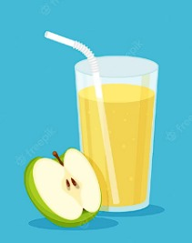
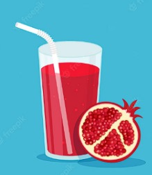

JUGO DE MANZANA
Es una excelente fuente de vitamina C y antioxidantes
Trituración o molienda de las manzanas para convertirlas en una
pulpa.
Extracción del jugo de la pulpa resultante, ya sea mediante prensado o centrifugación.
JUGO DE NARANJA
Nuestro jugo de naranja fresco es una auténtica explosión de sabor y frescura que
te transportará a un amanecer soleado en un huerto de cítricos.
JUGO DE PIÑA
Elaborado con piñas frescas y jugosas, cada sorbo es una experiencia refrescante
que combina la dulzura natural de la piña con un toque ácido

JUGO DE REMOLACHA
Nuestro jugo de remolacha es una experiencia de sabor única que combina la robustez
de la remolacha con un toque de frescura y vitalidad.